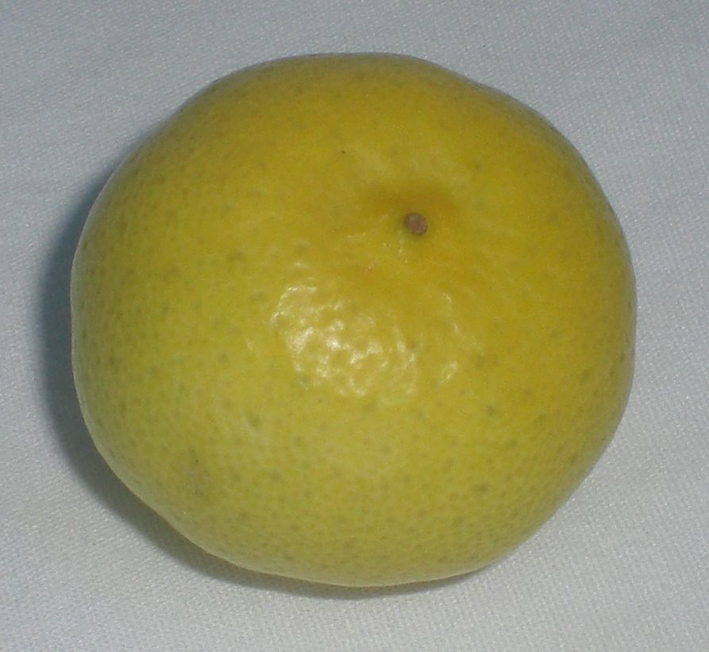

कागज़ी नींबूKagzi Lime
Citrus aurantiifolia · Rutaceae · FLR-0189

- Scientific name वैज्ञानिक नाम
- Citrus aurantiifolia (Christm.) Swingle
- Family कुल
- Rutaceae
- Hindi हिंदी
- कागज़ी नींबू
- Local names स्थानीय नाम
- kagzi nimbu, kagji nimbu, kagzi nibu, nimbu, lime
- Status here यहाँ की स्थिति
- cultivated
- Movement आवागमन
- Resident, here all year
- IUCN IUCN
- not evaluated
- Review समीक्षा
- audited and independently read
When to look कब देखें
Present all year. साल भर मौजूद।
Uses and possibilities उपयोग और संभावनाएँ
“Traditional medicine” means a documented traditional use, not a claim that it works. Nothing on this page is medical advice.
Drawn from the documented uses in the profile below, where each is labelled traditional, current or a research lead. All uses →
Tell it apart from इनसे अलग पहचानें
कागज़ी नींबू / Kagzi Lime
Citrus aurantiifolia (Christm.) Swingle — Rutaceae
कागज़ी नींबू — यह छोटा, कांटेदार, सदाबहार पेड़ पूर्वी उत्तर प्रदेश के गाँवों और नगरों में आमतौर पर उगाया जाता है। इसका फल पीले-हरे रंग का, गोल, छोटा (लगभग गुली-डंडे के आकार का), और बहुत खट्टा होता है। नींबू का रस खाने-पीने में, नमक के साथ गर्मियों की पिप्पासा शांत करने में, और दही, चावल तथा दाल में स्वाद के लिए इस्तेमाल होता है। औषधीय रूप से सर्दी-खाँसी में गर्म पानी में शहद के साथ पिया जाता है। पेड़ पर साल भर फूल और फल आते हैं, इसलिए बाग़ों में यह बहुत मूल्यवान है।
Quick Identification त्वरित पहचान
| Feature | Description |
|---|---|
| Size | Evergreen shrub or small tree, 4–8 m, dense branching, thorny |
| Leaves | Simple, alternate, ovate, 5–10 cm, glossy green, aromatic when crushed |
| Flowers | Small, white or pale pink, fragrant, solitary or in clusters, year-round |
| Fruit | Round, 3–5 cm diameter, thin yellow-green skin, very acidic juice, few seeds |
| Thorns | Sharp, 1–2 cm, common on branches |
| The test | Round, small, yellow-green citrus with very sour juice and paper-thin rind |
Field tip: Look for a thorny, dense, evergreen shrub in house gardens and village orchards. The small round yellow-green fruits and aromatic foliage are diagnostic. Fruit year-round but abundant in April–May and October–November.
हिंदी — कैसे पहचानें: छोटा, कांटेदार पेड़, सफेद फूल, गोल पीले-हरे नींबू। छिलका बहुत पतला, रस बहुत खट्टा।
Morphology आकारिकी
Biometrics (cultivated trees, northern India):
| Measurement | Range |
|---|---|
| Height | 4–8 m |
| Trunk diameter | 10–30 cm |
| Leaf length | 5–10 cm |
| Leaf width | 2.5–5 cm |
| Fruit diameter | 3–5 cm |
| Fruit weight | 30–50 g |
Trunk and bark: Short, branching low, bark grey-brown, smooth or slightly fissured. Wood pale yellow, moderately hard.
Leaves: Simple, alternate, oblong-ovate, 5–10 cm long, 2.5–5 cm wide, with a winged petiole (the leaf stalk is narrowly winged). Margin entire or slightly crenate. Glossy dark green above, paler below, with transparent dots (oil glands) visible with a lens. Aromatic when crushed, the scent characteristic of citrus.
Flowers: Bisexual, borne singly or in small clusters in the leaf axils. Each flower 1.5–2 cm diameter, white or pale pink, with five petals, numerous stamens, and a fragrance attractive to bees. Flowering occurs year-round in warm climates, but peaks in spring and autumn.
Fruit: A hesperidium (the citrus berry), round to slightly oblong, 3–5 cm diameter. The skin is thin, smooth, yellow-green when ripe, with numerous oil glands. The flesh (segments) is pale yellow, very juicy, and extremely sour (pH 2.5–3). Seeds are few (0–10 per fruit) and polyembryonic (each develops a genetically identical embryo).
हिंदी: पत्तियाँ सरल, सुगंधित। फूल सफेद, सुगंधित, साल भर। फल गोल, छोटा, पतले छिलके वाला, बहुत खट्टा।
Behaviour & Ecology व्यवहार और पारिस्थितिकी
A tropical and subtropical citrus, believed to have originated in the Malay Peninsula, now cultivated throughout tropical Asia and the Caribbean. In the Basti region it is well-adapted, tolerating the heat and humidity of the monsoon and growing vigorously. The tree produces flowers and fruit almost continuously, with two main flushes (spring and autumn) when most fruit ripens. It is moderately drought-tolerant once established but responds to irrigation with heavier crops. Trees begin bearing in 2–3 years from budded stock and reach full production at 5–10 years.
Early flowers are visited by Asian Honey Bee and other bees. Ripe fruit is taken by Indian Flying Fox, parakeets, and mynas, though the extreme sourness deters most birds. The fruit falls and rots beneath the tree.
हिंदी: यह पूर्वी उत्तर प्रदेश की जलवायु के लिए उपयुक्त है। साल भर फल आते हैं। मधुमक्खियाँ फूलों पर आती हैं। चमगादड़ और पक्षी फल खाते हैं।
Life Cycle / Phenology जीवन चक्र
| Month / season | Event |
|---|---|
| Year-round | Continuous flowering and fruiting |
| March–April | Main flowering (spring) |
| May–June | Fruit ripens; main harvest season |
| July–September | Slower growth in monsoon |
| October–November | Second flowering and fruit ripening |
| 2–3 years from bud-graft | First commercial harvest |
Seeds germinate quickly in warm, moist conditions. Lifespan is 30–50 years for productive trees.
हिंदी: साल भर फूल। मुख्य फसल अप्रैल-मई और नवंबर-दिसंबर में। बीज से नहीं, कलम से लगाते हैं।
Associated Species / Interactions संबंधित प्रजातियाँ
- Pollinators: Asian Honey Bee, other bees, and flies on flowers year-round.
- Fruit dispersers: Indian Flying Fox, occasionally Common Myna and Rose-ringed Parakeet (though fruit is too sour for most birds).
- Companions in gardens: Often grown with other citrus (sweet lemon, bitter orange), Mango, and Guava.
Pests and Diseases कीट और रोग
- Leaf-eating caterpillars and leaf miners on young growth in monsoon.
- Scale insects on stems and leaf undersides; controlled by oil spray.
- Citrus canker (bacterial disease) in wet seasons; infected twigs must be pruned.
- Powdery mildew on flowers in humid conditions.
- Root rot in waterlogged soils; ensure good drainage.
- Generally hardy compared to other citrus species.
Agricultural / Human Relevance कृषि प्रासंगिकता
Traditional and ethnobotanical use:
The fruit juice is the primary use. It is drunk as a beverage mixed with water and sugar, or added to salt and water (nimbu-pani, a cooling summer drink) to quench thirst. In traditional medicine, warm juice with honey is used for colds and sore throats.
Today. Kagzi lime is cultivated in almost every village orchard and homestead garden in Basti, valued for year-round availability and reliable cropping. The fruit is sold in local bazaars and at roadsides. Home consumption is high; many families preserve juice for use in dry season.
**Yield and production. A mature tree bears heavily, in two main flushes a year. In Basti's climate, two main crops per year are normal.
Horticultural advantages. The tree is hardy, pest-resistant, and requires minimal inputs. Budded trees on vigorous rootstocks are standard practice; seed-grown trees are less uniform but still productive.
हिंदी: पूर्वी उत्तर प्रदेश में सबसे आम साइट्रस। साल भर ताज़ा फल। गर्मियों में नींबू-पानी और चाय में। सर्दी में शहद के साथ खाँसी में। पेड़ लगभग हर घर के बाग़ में है।
Expected Locally स्थानीय रूप से अपेक्षित
Not a field record. Written from published accounts for eastern Uttar Pradesh. No confirmed local sighting yet — if you have seen it, that is what the atlas needs.
अभी तक स्थानीय पुष्टि नहीं। यह विवरण प्रकाशित स्रोतों से है, किसी अवलोकन से नहीं।
Expected in almost every village homestead garden and urban garden in Basti district. The tree is ubiquitous in orchards and around houses. Fruits are visible year-round but most abundant April–June and October–November. The plant is so widespread that it is considered part of the standard village fruit garden flora.
Distribution वितरण
Global range: Believed to be native to Malaysia; now cultivated throughout the tropics and subtropics, especially the Caribbean and Asia.
In India: Cultivated universally in home gardens and commercial orchards in all tropical and subtropical states.
In Uttar Pradesh: Very common in all districts, from the foothills to the plains.
In Basti district / eastern UP: Ubiquitous in village homestead gardens and orchards; the most common citrus in the region.
Research Questions शोध प्रश्न
Anyone can investigate these | कोई भी इन प्रश्नों की जाँच कर सकता है
- How many fruits does a mature kagzi tree produce in a year from your area? / आपके क्षेत्र के एक परिपक्व नींबू के पेड़ से साल में कितने नींबू मिलते हैं? — Count fruits at harvest and estimate annual yield.
- Which insects visit kagzi lime flowers in May, and for how long? — Observe flowers at different times of day.
- Does hand-thinning of young fruits increase individual fruit size? — Thin half a branch and compare fruit size at harvest.
- How does pruning height affect the number of fruits produced? — Compare unpruned and pruned trees.
- Can kagzi lime trees be grown from seeds, and do they fruit true to type? — Grow seedlings and compare fruit quality with budded trees.
Similar Species मिलती-जुलती प्रजातियाँ
| Species | How to tell apart | हिंदी |
|---|---|---|
| Litchi (Litchi chinensis) | Pinnate leaves; bumpy red sweet fruit; flowers in large panicles; different family | पत्तियाँ पंखनुमा; फल बड़ा, उबड़ा, लाल, मीठा |
| Sweet lemon (Citrus limetta) | Larger round fruit, greenish-yellow, sweet not sour; leaves larger | फल बड़ा, पीला-हरा, मीठा |
| Bitter orange (Citrus aurantium) | Larger fruit, more bitter pulp; leaves have broader wing on petiole; fragrant flowers | फल बड़ा, कड़वा; पत्ती डंठल पंख चौड़ा |
Field rule: A small thorny evergreen citrus with tiny round yellow-green fruits, extremely sour juice, and year-round flowering is kagzi lime; it is the commonest citrus fruit in village gardens.
Taxonomy & Classification वर्गीकरण
Original description. Described by Paul Carpenter Standley in 1911, though originally noted by Christmann. The genus Citrus is of uncertain origin; aurantiifolia is derived from Latin meaning "small golden fruit" (aureus = golden, folium = leaf-like).
Subspecies. Monotypic — no subspecies are currently recognised.
Family and order placement. Rutaceae (citrus and rue family), order Sapindales, alongside true lemons and sweet oranges.
Phylogenetic notes. Citrus aurantiifolia is believed to be a hybrid, possibly between Citrus medica (citron) and Citrus micrantha (a wild species), domesticated in Southeast Asia.
IUCN status rationale. Not evaluated. Widely cultivated; origin obscure.
Photo Gallery फोटो गैलरी
Photos needed आवश्यक फोटो
- [ ] Whole tree in a homestead garden (पूरा पेड़)
- [ ] Flowers on the tree (फूल)
- [ ] Ripe fruit on the branch (पका फल)
- [ ] Cross-section of fruit showing flesh and seeds (खुला फल)
No photos yet — add field photos to media/species/kagzi_lime/ and run node scripts/sync_photos.js.
References संदर्भ
- Christmann, G.F. (1777). Vollständiges Pflanzensystem 1: 618, as Limonia aurantiifolia; combination Citrus aurantiifolia (Christm.) Swingle (1913), Journal of the Washington Academy of Sciences 3: 465. [original description]
- Swingle, W.T. (1943). The botany of Citrus and its wild relatives. In The Citrus Industry, Vol. 1. UC Press, Berkeley.
- Hooker, J.D. (1875). The Flora of British India, Vol. 1. L. Reeve, London. (Citrus)
- Brandis, D. (1906). Indian Trees. Archibald Constable & Co., London.
- ICAR (2021). Handbook of Horticulture. Indian Council of Agricultural Research, New Delhi.
- GBIF Occurrence Data — Citrus aurantiifolia, India (2015–2026).
Source file: species/flora/trees/kagzi_lime.md